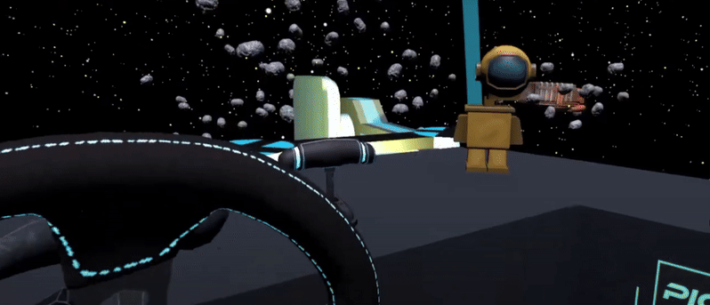

Code Samples

public class UpAndDownMovement : MonoBehaviour
{
private LogitechGSDK.DIJOYSTATE2ENGINES rec;
private float speed = 5; // how fast you move up and down
void Start()
{
transform.position = Vector3.zero;
}
void Update()
{
rec = LogitechGSDK.LogiGetStateUnity(0);
LogitechGSDK.LogiControllerPropertiesData actualProperties = new LogitechGSDK.LogiControllerPropertiesData();
LogitechGSDK.LogiGetCurrentControllerProperties(0, ref actualProperties);
GetButtons(); // Check for button input
}
void GetButtons()
{
for (byte i = 0; i < 128; i++) // go through all 128 button inputs
{
if (rec.rgbButtons[i] == 128) // Check if button is pressed
{
Gear3(i);
Gear4(i);
}
}
}
public bool Gear3(byte button14)
{
if (button14 == 14)
{
transform.position = new Vector3(transform.position.x, (transform.position.y + (Time.deltaTime * speed)), transform.position.z);
return true;
}
return false;
}
public bool Gear4(int button15)
{
if (button15 == 15)
{
transform.position = new Vector3(transform.position.x, (transform.position.y - (Time.deltaTime * speed)), transform.position.z);
return true;
}
return false;
}
}

public float maxAngularVelocity = 30;
public float Torque = 0.5f;
[SerializeField] private float minTurnSpeed = -2;
[SerializeField] private float maxTurnSpeed = 1;
private Rigidbody rigidbody;
[SerializeField] private const float DeadzoneMin = -1f;
[SerializeField] private const float DeadzoneMax = 1f;
[SerializeField] private GameObject wheel;
public float rotationSpeed = 100f;
private float currentWheelRotation = 0f;
void FixedUpdate()
{
rigidbody.angularVelocity = Vector3.up * Mathf.Clamp(rigidbody.angularVelocity.y, minTurnSpeed, maxTurnSpeed);
}
public void OnWheelInput(float input)
{
Rotate(input);
}
private void Rotate(float NormalizedInput)
{
if (NormalizedInput > DeadzoneMin && NormalizedInput < DeadzoneMax)
{
NormalizedInput = 0f;
}
rigidbody.AddRelativeTorque(Vector3.up * Torque * NormalizedInput, ForceMode.Force);
currentWheelRotation += -NormalizedInput * rotationSpeed * Time.deltaTime;
currentWheelRotation = Mathf.Clamp(currentWheelRotation, -450f, 450f);
wheel.transform.localRotation = Quaternion.Euler(currentWheelRotation, 0, 0);
}
private void ApplyPasiveForceFeedback()
{
LogitechGSDK.LogiPlaySpringForce(0, Offset, Saturation, Coefficient);
}

private void NoFuelLeft()
{
if (Fuel <= 0.01)
{
sosCanvas.SetActive(true);
rb.isKinematic = true;
}
}
private void PressedX(int button)
{
if (button == 0 && Fuel < 1)
{
StartCoroutine(FadeIn());
StartCoroutine(WaitASec());
}
}
IEnumerator FadeIn()
{
Renderer rend = sphere.transform.GetComponent();
for (float i = 0; i <= 1; i += Time.deltaTime)
{
rend.material.color = new Color(0, 0, 0, i);
yield return null;
}
}
IEnumerator FadeOut()
{
Renderer rend = sphere.transform.GetComponent();
for (float i = 1; i >= 0; i -= Time.deltaTime)
{
rend.material.color = new Color(0, 0, 0, i);
yield return null;
}
}
IEnumerator WaitASec()
{
yield return new WaitForSeconds(1.5f);
transform.position = bigShip.transform.position;
StartCoroutine(FadeOut());
Fuel = 100;
sosCanvas.SetActive(false);
rb.isKinematic = false;
}